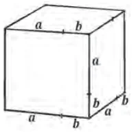
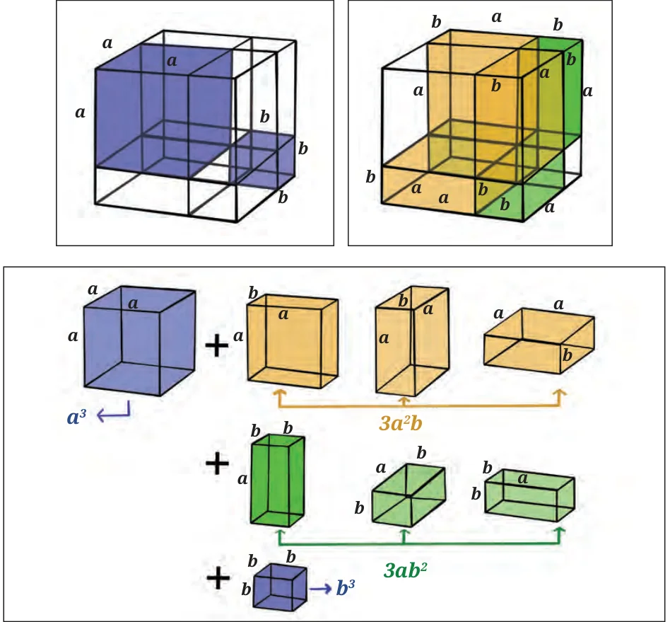

In this section we will play around with algebraic expressions to see if we can arrive at new identities.
What do you think \((a + b)^3\) will look like? Let us find out the answer using the distributive property:
\((a + b)^3 = (a + b)(a^2 + 2ab + b^2) = a^3 + 3a^2b + 3ab^2 + b^3\).
Here we have found a new identity, namely,
$$(a + b)^3 = a^3 + 3a^2b + 3ab^2 + b^3.$$
Let us try to visualise this identity. We saw that a square of side \(a + b\) can be divided into squares and rectangles. This led us to the identity,

\((a + b)^2 = a^2 + 2ab + b^2\). What if we have a cube of edge \(a + b\)? Can we divide a cube of edge \((a + b)\) into smaller cubes and cuboids and represent this new identity?
We know that the volume of this cube is \((a + b)^3\). Let us split this cube into smaller cubes and cuboids.

Notice that the larger cube can be split into two cubes and six cuboids. The cubes have volumes, \(a^3\) and \(b^3\) cubic units, respectively. Amongst the other six cuboids, three have dimensions \(a\) units \(\times\) \(a\) units \(\times\) \(b\) units and other three have dimensions \(a\) units \(\times\) \(b\) units \(\times\) \(b\) units, and so their volumes are \(a^2b\) and \(ab^2\) cubic units, respectively. Hence the total volume of the six cuboids is \(3a^2b + 3ab^2\).
This gives us, \((a + b)^3 = (a + b)(a^2 + 2ab + b^2) = a^3 + 3a^2b + 3ab^2 + b^3\). Here we have found a new identity, namely,
$$(a + b)^3 = a^3 + 3a^2b + 3ab^2 + b^3.$$
What happens when we replace \(b\) with \(-b\) in this new identity?
\([a + (-b)]^3 = a^3 + 3a^2(-b) + 3a(-b)^2 + (-b)^3\).
This leads to the identity \((a - b)^3 = a^3 - 3a^2b + 3ab^2 - b^3\). Note that out of the four terms, two are positive and two are negative. They appear alternately in the expression.
Let us see how we can use these new identities.
Example 13: What is the side of the cube whose volume is \(p^3 + 6p^2q + 12pq^2 + 8q^3\) cubic units?
Comparing \(p^3 + 6p^2q + 12pq^2 + 8q^3\) with the right side of the identity \((a + b)^3 = a^3 + 3a^2b + 3ab^2 + b^3\), we may rewrite it as
\((p)^3 + 3(p)^2(2q) + 3(p)(2q)^2 + (2q)^3\)
which is \((p + 2q)^3\), so that \(a = p\) and \(b = 2q\). Hence a side of the cube will be \(p + 2q\) units.
Example 14: Now consider the expression
\(8n^3 - 60n^2m + 150nm^2 - 125m^3\).
If you write it in the form \((a - b)^3\), what will be \(a\) and \(b\)?
Rewriting the expression \(8n^3 - 60n^2m + 150nm^2 - 125m^3\) as
\((2n)^3 - 3(2n)^2(5m) + 3(2n)(5m)^2 - (5m)^3\) and comparing it with \(a^3 - 3a^2b + 3ab^2 - b^3 = (a - b)^3\), we get \((2n - 5m)^3\). Hence \(a = 2n\) and \(b = 5m\).
Now let us play with known identities to discover more identities. Try to multiply the following using the distributive property.
- \((x - y)(x^2 + xy + y^2)\)
- \((x + y)(x^2 - xy + y^2)\)
Let us work out the product of the first one.
\((x - y)(x^2 + xy + y^2) = x^3 + x^2y + xy^2 - x^2y - xy^2 - y^3\)
\(= x^3 + x^2y + xy^2 - x^2y - xy^2 - y^3 = x^3 - y^3\).
Thus \((x - y)(x^2 + xy + y^2) = x^3 - y^3\). This is also an identity! Verify this for yourself by choosing different values of \(x\) and \(y\).
Predict what \((x + y)(x^2 - xy + y^2)\) will be.
Think and Reflect
We already know that \(x^2 - y^2 = (x - y)(x + y)\).
Further, we have verified that \(x^3 - y^3 = (x - y)(x^2 + xy + y^2)\).
Observe that \(x - y\) is a common factor of \(x^2 - y^2\) and \(x^3 - y^3\).
Do you think \(x - y\) is also a factor of \(x^4 - y^4\)?
Note that \(x^4 - y^4 = (x^2)^2 - (y^2)^2 = (x^2 - y^2)(x^2 + y^2)\).
Can you see how \(x - y\) is a factor of \(x^4 - y^4\)?
How about \(x^5 - y^5\)? Does this also have \(x - y\) as a factor?
Exploring further, let us multiply \((x + y + z)\) and \((x^2 + y^2 + z^2 - xy - xz - yz)\).
\((x + y + z)(x^2 + y^2 + z^2 - xy - xz - yz)\)
\(= (x^3 + xy^2 + xz^2 - x^2y - x^2z - xyz)\)
\(+ (x^2y + y^3 + yz^2 - xy^2 - xyz - y^2z)\)
\(+ (x^2z + y^2z + z^3 - xyz - xz^2 - yz^2)\)
\(= (x^3 + \cancel{xy^2} + \cancel{xz^2} - \cancel{x^2y} - \cancel{x^2z} - xyz) + (\cancel{x^2y} + y^3 + \cancel{yz^2} - \cancel{xy^2} - xyz - \cancel{y^2z})\)
\(+ (\cancel{x^2z} + \cancel{y^2z} + z^3 - xyz - \cancel{xz^2} - \cancel{yz^2})\)
\(= x^3 + y^3 + z^3 - 3xyz\).
So, \((x + y + z)(x^2 + y^2 + z^2 - xy - xz - yz) = x^3 + y^3 + z^3 - 3xyz\).
This is yet another identity. Let us explore some of its applications.
Example 15: The sum of three numbers is 10 and their product is 25. The sum of their squares is 38. Try to use the previous identity to find the sum of the cubes of these three numbers.
Let the three numbers be \(x\), \(y\) and \(z\), respectively. According to the problem \(x + y + z = 10\), \(xyz = 25\) and \(x^2 + y^2 + z^2 = 38\). Substituting in the identity
\((x + y + z)(x^2 + y^2 + z^2 - xy - xz - yz) = x^3 + y^3 + z^3 - 3xyz\), we get
\((10)(38 - xy - xz - yz) = x^3 + y^3 + z^3 - 3(25)\).
Thus, \(x^3 + y^3 + z^3 = 380 - 10(xy + xz + yz) + 75 = 455 - 10(xy + xz + yz)\).
To find \((xy + xz + yz)\), we need to use the identity
\((x + y + z)^2 = x^2 + y^2 + z^2 + 2xy + 2xz + 2yz\).
We get \(100 = 38 + 2(xy + xz + yz)\). Thus \(xy + xz + yz = 31\). Now, substituting this into our earlier equation, we obtain
\(x^3 + y^3 + z^3 = 455 - 10(xy + xz + yz) = 455 - 10(31) = 455 - 310 = 145\).